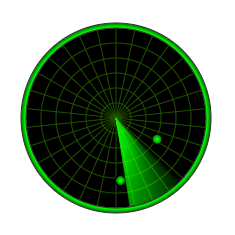

Home → Segment Radar
Radar (graphical object) - a round interface for visualizing data from a radar (Fig. 1).

Fig. 1 - Radar
The following scripts should be included in the <head> section:
To create an object, the main parameters are passed to the constructor function:
id - radar identificator as a text string.
context - CanvasRenderingContext2D for drawing the radar.
cx - X coordinate of the radar center.
cy - Y coordinate of the radar center.
thickness - thickness of the radar.
Examples of using various properties and methods of the object.
factor - zoom ratio of targets on the radar screen.
SegmentRadar is a composite object. It includes:
grid - coordinate grid represented by a SegmentGrid.
locator - locator represented by a Segment.
frame - frame represented by a Segment.
gradient - fill gradient. Type of value is SegmentGradient.
background - fill color (applies if fill gradient is not specified).
border_width - base grid border width.
border_color - base grid border color.locator_angle - the angle of the segment representing the locator.
locator_period - locator rotation period.
locator_gradient - locator segment fill gradient.
locator_border_width - locator segment border width.
locator_border_color - locator segment border color.frame_gradient - frame segment fill gradient.
frame_background - frame segment fill color.
frame_border_width - frame segment border width.
frame_border_color - frame segment border color.dot_radius - radius of dots representing targets.
dot_gradient - dots fill gradient.
dot_background - dots fill color.
dot_border_width - dots border width.
dot_border_color - dots border color.
visible - value true ensures object visibility.
segments_visible - value true ensures targets visibility.
locator_enabled - locator operating mode: true - enabled, false - disabled.
in_progress - flag takes the value true during the animation.
build() - performs basic calculations of the shape and style of object, taking into account the specified properties and flags.
draw() - draws an object.
instanceCopy() - creates an independent copy of the object.
startLocator() - turning on the locator.
rotateLocator() - rotation of the locator (used automatically if the locator is on).
stopLocator() - turning off the locator.
targetsToDots(targets) - method for calculating the coordinates of targets on the locator screen using the input targets array.
The targets array must contain objects in the format:{ 'id' : identificator, 'x' : abscissa, 'y' : ordinate, 'angle' : angle }
The radar is designed to track the coordinates of targets.
When changing the position of targets, it is needed to call the targetsToDots method, to which should pass the updated targets array.
This method will update the list of dots representing targets and fire the segment-radar-changed event.
When this event occurs, it is needed to clear the canvas and call the draw () method to update the radar state.
Events triggered by a SegmentRadar are implemented using a CustomEvent.
In the detail.radar field, a link to the object itself is passed.
segment-radar-changed - state of the object is changed.
Home → Segment Radar